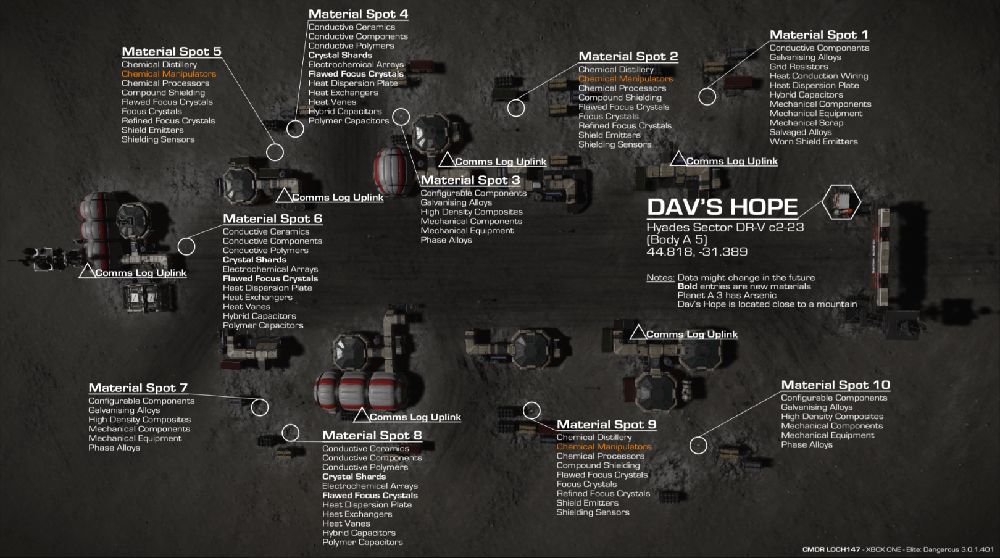

On this page
Ten drop points ring the ruins, each holding free canisters of manufactured materials. Drive an SRV circuit, relog to respawn, repeat. It's a G1–G3 powerhouse with a steady G4 trickle — the perfect companion to the HGE farm, which owns the G4/G5 end.
Dav's Hope is a derelict surface settlement on planet A 5 in Hyades Sector DR-V c2-23. Ten material drop points (plus one data point for an encoded mat) sit around the ruins, each holding free canisters of manufactured materials. You drive an SRV around the perimeter scooping them, then re-instance the site to respawn the lot.
Every pickup is worth 3 units, and a full clockwise lap nets roughly 30 items averaging around grade 2.6 — which tells you exactly what this farm is for: it's a G1–G3 powerhouse (plus a steady trickle of G4s). It's the perfect companion to the HGE farm, which owns the G4/G5 end.
Dav's Hope fills the bottom of the manufactured grid fast and feeds the trader; the HGE run fills the top (G5) fast. Run both and you never want for manufactured mats again.
Minimal. Any landing-capable ship with an SRV works — your Asp Explorer already carries everything:
No weapons, shields, or combat fit required — the site is abandoned and non-hostile. Land, drop the SRV, drive.
After your first visit the site is saved as a "Dav's Hope" entry in your left Nav panel, so the coordinate hunt is a one-time chore.
Drop into the system, scan it, and head for planet A 5.
Drop a DSS probe on A 5 to get a HUD nav marker, then fly to 50.5322, 137.4363. On later visits just select "Dav's Hope" in the Nav panel.
Set down beside the ruins and drop the buggy.
Loop the settlement clockwise, collecting each material canister (cargo scoop deployed). There are 10 drop points plus one data point you can scan for an encoded mat.
Once you've completed the lap, mode-switch — or log out and back into the same game mode (Solo is fastest) — to reset the instance and respawn every canister.
Keep looping until you've got what you need, then hop ~43 Ly to Vaucanson Gateway to trade.

The high-rate drops refill every single relog, so a few laps stockpiles huge quantities of the low-grade rows you'd otherwise grind for hours.
High-rate drops refill fast, so trade them to zero each run; the G4 rows come through as a steadier trickle.
| Material | Grade | Drop rate |
|---|---|---|
| Worn Shield Emitters | G1 | Abundant |
| Flawed Focus Crystals | G2 | Abundant |
| Galvanising Alloys | G2 | Abundant |
| Phase Alloys | G3 | Abundant |
| High Density Composites | G3 | Abundant |
| Chemical Manipulators | G4 | Medium |
| Configurable Components | G4 | Medium |
| Heat Vanes | G4 | Medium |
| Polymer Capacitors | G4 | Medium |
| Refined Focus Crystals | G4 | Medium |
The closest Manufactured Material Trader is Vaucanson Gateway (HIP 12067). Three kinds of conversion fill the gaps:
Cheap. Convert surplus G2/G3 down to fill the two missing G1 rows.
Same-grade swap. Use your abundant Alloys to make the two Thermic rows.
6× a G4 per unit. Fine for a few; bulk belongs to the HGE run.
A candid efficiency note so you pick the right tool:
(and a steady G4 trickle) — nothing fills the bottom of the manufactured grid faster, and it's your sideways-trade fuel for the Thermic rows.
The three trade-ups here — Pharmaceutical Isolators, Military Supercapacitors, Exquisite Focus Crystals — cost 6 G4 each and are slow. If you only need a handful for one build, trade up here; if you need them in bulk, anchor on the HGE farm instead (and remember Biotech Conductors & Exquisite Focus Crystals never spawn in HGEs — those are mission/trade only).
Figures on this page are verified against the sources below.
Note: the 4.0 engine moved the site — use the Live coordinate (50.5322, 137.4363); the old 44.818, -31.389 is the Legacy/Horizons location.